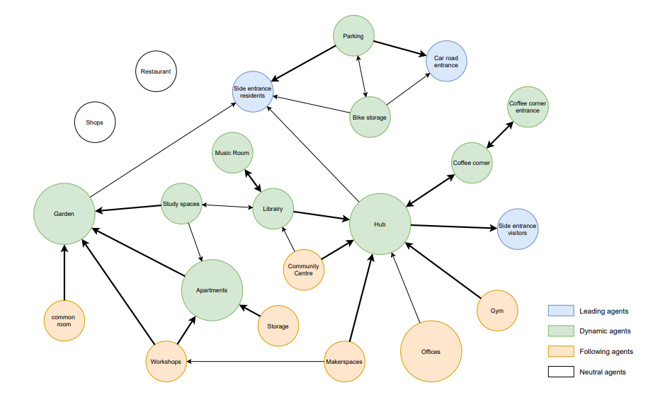
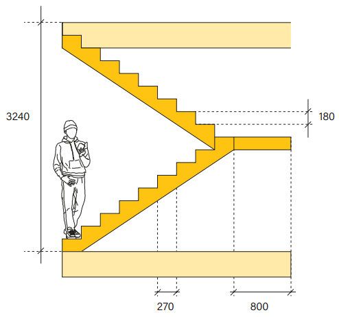
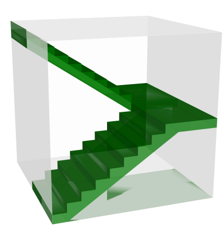
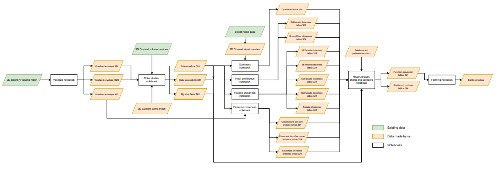
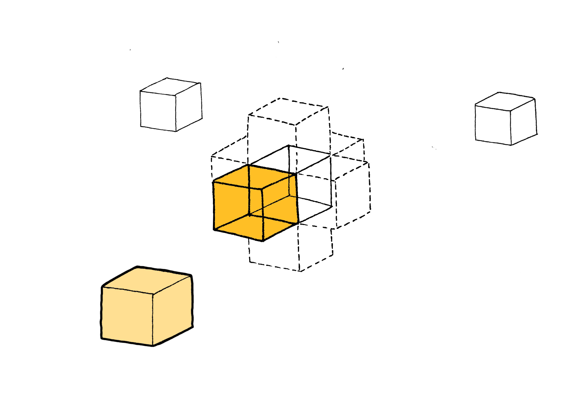

Process
REL chart
With a set program of requirements, we specified each space’s realtive closeness preferences and certain prefered spatial qualities.

Weights and preferences hierarchy
Growth hierarchy
According to our design strategy with privacy gradients and the decision
to cluster functions around hubs, a hierachy of spaces arises. When the
growth algorithm seeds and grows spaces, the matrix is used to look up
which spaces should grow or “follow” which spaces. However, not every
space finds it important to follow another. Some spaces are dependant on
the location of the hubs but the hubs themselves are not affected by the
spaces following them. This relationship indicated in the matrix by lack
of symmetry across the diagonal.
The following bubble diagram illustrates the meaning of this assymetry along the diagonal in the REL chart. For example, co-cooking area and community garden are connected in the metro diagram , this is also reflected in the REL chart. However, because the co-cooking area indicates that it would need to grow toards the garden, and garden does not iindicate any preference for growing towards the co-cooking, a hieracy arises : co-cokking follows garden, not the other way around.


{kind=link}
Voxel size
Having set design goals and user perspectives, we chose a voxel size that we consider multifunctional enough to form spaces with different functions. This voxel size became a base for the voxel cloud used in all following computations.
-
Why this size?
- Height and width are the same, therefore it is a regular cube
- A staircase fits inside a single voxel from floor to floor
- A third of the voxel size is a pleasant width for a small corridor (1080 mm)
-
Building regulations:
- Width stairs: minimum is 800 mm
- Riser: minimum is 180 mm
- Tread width: minimum is 220 mm
- Head room: minimum is 2300 mm
 
Notebook Flowchart
The computation process is reflected in the flowchart.
For optimization purposes, we used 3 lattices with different voxel sizes. The resulting data was always interpolated for our main lattice with voxel size 3240x3240.

{kind=link}
Computation Flowchart
Static data creation
Solar envelope
Create an envelope based on solar blockage
The created envelope will be used as the base availability lattice on which all other calculations for static data and the growing of the agends are built upon.

| Pseudocode | |
|---|---|
| Input | Voxelized envelope, context mesh |
| Output | Solar envelope |
| Code | Create a list of all vectors pointing towards the sun locations over the year. For all voxels inside of the envelope:
For each voxel inside the envelope:
Set a limit to how much light the voxels are allowed to block and create a new lattice with either True or False values, depending on the amount of light blocked. Export this lattice as the new availability lattice. |

Solar accessibility
Ensure spaces get enough sunlight
This data is used for the growing algorithm by certain agents that prefer a high solar accessibility, for instance: the residential quarters and study spaces.

| Pseudocode | |
|---|---|
| Input | Solar envelope, context mesh |
| Output | Solar accesibility lattice |
| Code | Create a list of all vectors pointing towards the sun locations over the year. For all voxels inside of the envelope:
For each voxel inside the envelope:
Export the newly created lattice that lists the values of solar accessibility in a range from 0 to 1. |

Sky view factor
Ensure functions are able to see enough of the sky This data is used for the growing algorithm by certain agents that prefer a high sky view factor, for instance: the office spaces and garden.

| Pseudocode | |
|---|---|
| Input | Solar envelope, context mesh, dome mesh |
| Output | Sky view factor lattice |
| Code | Instead of creating a list of vectors pointing towards the sun locations over the year, append the normals of a dome mesh to a list, created to map the sky in equal proportions. For all voxels inside of the envelope:
For each voxel inside the envelope:
Export the newly created lattice that lists the values of the sky view factor in a range from 0 to 1. |

Floor level preference
Set floor levels for agents This data is used for the growing algorithm by certain agents that prefer a proximity to certain floors, for instance: the hub and garden prefer to be on the ground floor.

| Pseudocode | |
|---|---|
| Input | Solar envelope |
| Output | Floor level preference |
| Code |
|

Closeness to the facade (high resolution)
Ensure access to the facade
This is another parameter to optimize the placement of spaces that need direct daylight or adjacency to the street.

| Pseudocode | |
|---|---|
| Input | Availability lattice, custom stencil |
| Output | Facade closeness lattice |
| Code | Fill in its neighbor’s ID’s in the adjacency matrix |

Closeness to a specific facade (high resolution)
Orient for site accessability on a specific side
Some spaces and entrances require access to a specific facade based on traffic routes and greenery on the site. While they need to be dajcent to the facade, they do not need to be fixed in a specific place. The data field is used to create axes on each facade, to let the program choose the best location on it.
| Pseudocode | |
|---|---|
| Input | Availability lattice, custom stencil |
| Output | Specific facade closeness lattice |
| Code | Fill in its neighbor’s ID’s in the adjacency matrix |

Quietness from street noise
Orient according to traffic noise fall-off
The two main streets around the plot produce significant traffic noise. According to European Environment Agency, these streets produce 50 and 70db of noise. By mapping the noise fall-off from the street, the growth algorithm can take into account the spaces where quietness is especially preferable, such as the library.

| Pseudocode | |
|---|---|
| Input | Avalability lattice, meshes representing the streets with different noise levels |
| Output | Quietness from street noise lattice |
| Code | Load several meshes representing streets with different noise levels.
For each voxel:
Initialize a summing lattice
Repeat the for loop for the second street
Compute the aggregated noise lattice by converting the summing lattice back to logarithmic scale
Map the inverse field of noise values to a field of quietness values from 0 - 1, where 0 is the least quiet value and 1 is the quietest value.
|

Entrance closeness
Ensure access to an entrance
To make sure the agents who need to be close to an entrace can grow in that direction, an entrance accessibility lattice must be created.

| Pseudocode | |
|---|---|
| Input | Voxelized envelope, entrance locations based on street accessibility |
| Output | Entrance Lattice |
| Code | Set the entrance voxels based on the entrance locations.
For each non-entrance voxel: Find the closest entrance voxel Link the distance to that entrance to that voxel Convert the distance values into values between 0 and 1 Construct the entrance lattice. |
